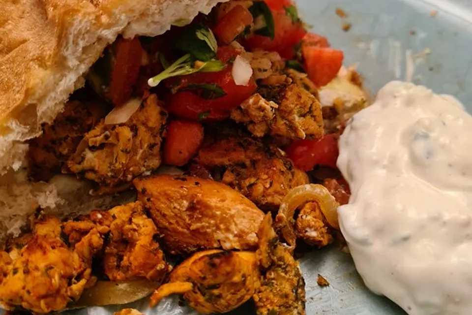

Hähnchen Döner
Schmackhafte Hähnchen Döner können auch zu Hause sehr einfach gebacken werden. Mit circa 30 minuten Aufwand kannst du ein wundervolles Frühstück zaubern.
Lust auf was neues?

Hamburger vs. Döner- was ist besser?
Ein Hamburger besticht durch seine saftige Fleischpatty (meist Rind), frische Zutaten wie Salat, Tomate und Zwiebeln sowie verschiedene Saucen: alles in einem weichen Brötchen. Perfekt für unkomplizierten Genuss und riesige Vielfalt, da jeder seinen Lieblingsburger selbst zusammenstellen kann.Ein Döner hingegen bringt die Aromen des Orients auf den Teller: knuspriges Fladenbrot, zartes, gewürztes Fleisch (traditionell Lamm oder Hähnchen), frische Salate und eine herrliche Joghurt- oder Knoblauchsauce. Er ist herzhaft, sättigend und oft die Rettung nach einer langen Nacht!